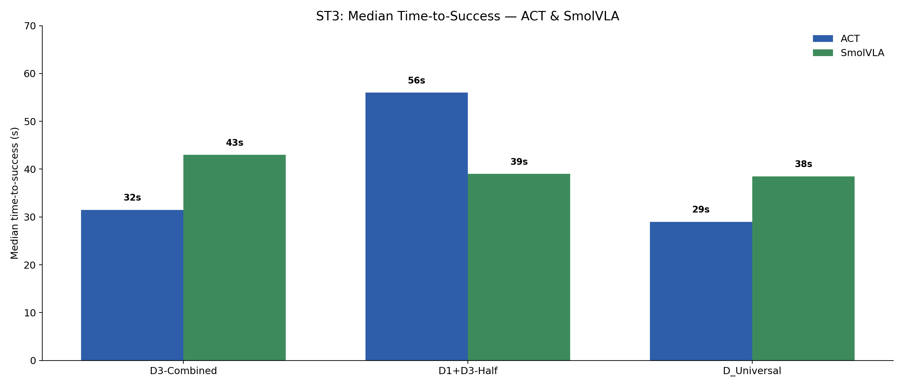

When does narrow-task training transfer? A real-robot study across task composition, spatial generalization, and three policy architectures.
384 teleop demos · 684 scored rollouts · 39 policies · 202 GPU-hours · 1 SO-ARM101
661 evaluation videos across all 39 policies, streamed from 🤗 Hugging Face. Use the chips at the bottom of the gallery to filter by architecture (ACT / SmolVLA / Pi0.5) and by task (ST1–ST4).
Imitation learning policies can reproduce demonstrated robot behavior in-distribution, but it is less clear when they learn reusable manipulation primitives rather than scene-specific shortcuts. I study this question on a real SO-ARM101 robot using a sponge pick-and-place task family. The study varies demonstration data composition and compares three policy families: ACT trained from scratch, SmolVLA, and Pi0.5.
Across 684 scored robot rollouts, the results show that data composition often dominates architecture choice. Marked-position datasets overfit, single-task training does not reliably compose to multi-object behavior, and small amounts of task-relevant cross-task data recover most of the benefit of universal training. Adding visual distractors changes the failure profile itself: color- and object-selection errors become as important as grasping errors. Pretrained VLA policies help in some regimes, but they do not remove the need for carefully structured robot data.
Beyond the headline metrics, three engineering lessons stood out. Data bugs look like model bugs — marked-position overfitting initially read as an architecture failure until the K/R split exposed the dataset shortcut. Evaluation UX is part of the experiment — a custom iPad dashboard that tagged failure modes inline made 684 rollouts tractable in a weekend without transcription errors. And objects have state — the same blue sponge stiffens when left out, turning a previously reliable pinch grip into a different contact problem, which physically explains some of the ST3/ST4 grasp misses.
How do known, random, mixed, and combined datasets affect position robustness?
Does training on a single-object task transfer to multi-object or distractor settings?
Do pretrained VLAs close the generalization gap relative to ACT trained from scratch?
384 teleop episodes across 3 tasks, organized into 16 dataset recipes (known / random / mixed / combined / cross-task).
39 checkpoints across ACT (scratch), SmolVLA (full fine-tune), Pi0.5 (VLM-frozen fine-tune) — 202 GPU-hours total.
684 scored real-robot rollouts on K / R weighted scenes with timing and failure-mode labels.
The four scoring tasks (ST1–ST4) form a compositional ladder along two independent axes: number of target objects (one vs. many) and presence of distractors (clean scene vs. clutter). ST1–ST3 have matching teleop datasets (T1, T2, T3); ST4 has no dedicated training data and acts as a held-out compositional probe combining the multi-object and distractor axes.
| Task | Target sponges | Distractors | Description | Capability probed | Training data |
|---|---|---|---|---|---|
| ST1 | 1 blue | None | Pick one blue sponge and place it in the bowl. | Base single-object grasp + place. | T1 (128 eps) |
| ST2 | 2 blue | None | Pick two blue sponges and place both in the bowl. | Multi-object sequencing, re-engagement. | T2 (128 eps) |
| ST3 | 1 blue | Yes — colored distractors | Pick the blue sponge among visually similar distractors. | Color / object selection robustness. | T3 (128 eps) |
| ST4 | 2 blue | Yes — colored distractors | Pick multiple blue sponges from a cluttered scene. | Joint composition: selection × sequencing. | None — held-out |
Sponge color, bowl, and gripper geometry are fixed across all tasks; only object count and distractors change. This isolates compositional generalization from low-level perception changes.
All demonstrations were teleoperated on a single SO-ARM101 with a leader/follower pair. 384 episodes were collected in ~5.7 hours of recording across three base tasks (T1 = single sponge, T2 = multi-sponge, T3 = clutter / distractor), with 128 episodes per task. Each task has known-position, random-position, mixed, and combined splits, plus four cross-task mixtures, giving 16 named datasets:
| Task | K (known) | R (random) | Mixed | Combined | Cross-task |
|---|---|---|---|---|---|
| T1 | D1-K | D1-R | D1-Mixed | D1-Combined | D_Universal · D_D2D3 D_D1D2-Half · D_D1D3-Half |
| T2 | D2-K | D2-R | D2-Mixed | D2-Combined | |
| T3 | D3-K | D3-R | D3-Mixed | D3-Combined |
For each base task we collected 128 episodes = 64 known + 64 random. From those we built four task-specific subsets (D1/D2/D3 stand for tasks T1/T2/T3):
| Name | What it contains | Episode count |
|---|---|---|
DX-K | Only the 64 known-position demos. | 64 |
DX-R | Only the 64 random-position demos. | 64 |
DX-Mixed | A 50/50 mix: 32 known + 32 random. | 64 |
DX-Combined | Everything for that task: all 64 known + 64 random. | 128 |
The four cross-task mixtures combine those subsets across tasks:
| Name | Made from | Episode count |
|---|---|---|
D1+D2-Half | D1-Combined (128) + D2-Mixed (64) — single-sponge plus a half-portion of multi-sponge. | 192 |
D1+D3-Half | D1-Combined (128) + D3-Mixed (64) — single-sponge plus a half-portion of distractor. | 192 |
D_D2D3 | D2-Combined (128) + D3-Combined (128) — multi-sponge plus distractor, no single-sponge. | 256 |
D_Universal | D1 + D2 + D3 Combined — every demonstration we collected. | 384 |
So when a results table shows D1+D2-Half on ST2, it means: trained on all 128 single-sponge demos plus 64 multi-sponge demos, evaluated on the two-sponge task. The "Half" suffix flags that only half of the secondary task's data is used — a deliberate test of how little auxiliary data is enough.
The dataset is open-sourced on Hugging Face: aswinkumar99/LeRobot-SO101-Pick-Place.


Each of the three architectures was trained on the same dataset recipes, but with a different pretraining/fine-tuning regime. This is the core architecture comparison.
~84 M params · Transformer encoder–decoder + CVAE
--policy.type=act · 60 000 steps · batch 32 · checkpoints every 15 000 steps.~450 M params · SmolVLM-2 (256 M) + action expert (~200 M)
--policy.path=lerobot/smolvla_base · 20 000 steps · batch 128 (universal) / 64 (splits) · save every 5 000.camera1, wrist → camera2.~3.4 B params · PaliGemma (3 B) + flow-matching action head
freeze_vision_encoder=true; only the action expert trains (train_expert_only=true).--policy.path=lerobot/pi05_base · BF16 · 20 000 steps · batch 32 · LR 5e-5 · 1 000-step warmup.base_0_rgb, wrist → right_wrist_0_rgb.6 × RTX PRO 6000 Blackwell · 26 h wall-clock · 156 GPU-hours
huggingface/lerobot-gpu, launched via train_matrix.sh / train_combo_matrix.sh.1 × NVIDIA H200 · 46 h wall-clock · 46 GPU-hours
| Architecture | Pretraining | Training regime | Inference rate (RTX 4090 Mobile) |
|---|---|---|---|
| ACT | None | From scratch · 60 K steps | 30 Hz |
| SmolVLA | SmolVLM-2 + community LeRobot data | Full fine-tune · 20 K steps | ~30 Hz (occasional drops) |
| Pi0.5 | PaliGemma + cross-embodiment robot data | VLM frozen, action expert only · 20 K steps | ~6 Hz |
DiT × 4 was attempted but excluded after pre-flight (zero in-distribution success). ACT and SmolVLA both run near 30 Hz on the laptop GPU; only Pi0.5 is materially slower (~6 Hz), and that gap is relevant to its time-to-success numbers.
Each evaluated cell (one architecture × one dataset × one task) uses 16 trials: 8 Known + 8 Random. Identical pre-generated scenes are replayed across all models for fairness.

The secondary metric is median time-to-success among successful trials — a proxy for decisiveness and trajectory quality.

One-tap tagging in the dashboard removed CSV bookkeeping; labels feed directly into the ST3/ST4 failure atlas.
Every cell evaluated in this study — 45 (architecture × dataset × task) combinations — summarized as a single score (Known × 1.0 + Random × 1.5). Cell color is a quick visual guide: strong, partial, weak, failing. Dashes mark untrained combinations. The subsections below walk through these results one phenomenon at a time.
| Dataset | ST1 (max 20) | ST2 (max 20) | ST3 (max 20) | ST4 (max 15) | ||||||||
|---|---|---|---|---|---|---|---|---|---|---|---|---|
| ACT | Smol | Pi0.5 | ACT | Smol | Pi0.5 | ACT | Smol | Pi0.5 | ACT | Smol | Pi0.5 | |
| D1-K | 10 | 10 | — | — | — | — | — | — | — | — | — | — |
| D1-R | 17 | 13 | — | — | — | — | — | — | — | — | — | — |
| D1-Mixed | 12 | 17 | — | — | — | — | — | — | — | — | — | — |
| D1-Combined | 17 | 16.5 | 18.5 | 3.5 | 2.5 | 7.0 | — | — | — | — | — | — |
| D2-Combined | — | — | — | 15.5 | 14.5 | 17.0 | — | — | — | — | — | — |
| D3-Combined | — | — | — | — | — | — | 5.0 | 4.0 | 15.5 | — | — | — |
| D1+D2-Half | 15.5 | 20 | 17.5 | 18.5 | 13.0 | 17.0 | — | — | — | — | — | — |
| D1+D3-Half | 20 | 17 | 14.5 | — | — | — | 14.0 | 3.0 | 9.0 | — | — | — |
| D_D2D3 | — | — | — | — | — | — | — | — | — | 12.0 | 3.0 | 7.5 |
| D_Universal | 20 | 20 | 18.5 | 19.0 | 20 | 20 | 15.5 | 5.0 | 13.0 | 13.5 | 6.0 | 10.5 |
ST4 has no dedicated training set and is evaluated only on the random-position split (10 trials × 1.5 = max 15), so its scores are not directly comparable to ST1–ST3. The analyses below walk through the dataset/architecture interactions cell by cell.
One representative successful rollout for each of the four scoring tasks, overhead camera only. These are real policies running on the SO-ARM101, all played back at 4× speed for compactness.
Many more rollouts are browseable in the full eval_gallery/.
Click any plot below to open it full-size.
Training only on the 64 known-position demos (DX-K) lets a policy nail the marked positions but collapses on random ones. Both ACT and SmolVLA land at exactly 10/20 on ST1 from D1-K — the score a policy gets by perfectly handling the 8 known trials and missing all 8 random ones. The pattern holds across architectures, so the failure is in the training distribution, not the model class.

Why we expected it to: humans who can pick one sponge can trivially pick two — the second sponge is the same skill, repeated. Large language models show analogous behavior: a model that learns to add two numbers usually generalizes to adding three. So a reasonable prior is that a policy fluent in single-sponge picking should compose into two-sponge picking with little or no additional data.
What actually happened: a policy trained on all 128 single-sponge demos (D1-Combined) does not stitch together a two-sponge rollout on its own. ST2 scores from D1-Combined are 3.5 (ACT), 2.5 (SmolVLA), 7.0 (Pi0.5). Adding just 64 multi-sponge episodes (D1+D2-Half) raises ACT to 18.5 and Pi0.5 to 17.0 — close to the full D_Universal result. SmolVLA recovers more partially (13.0) and only reaches ceiling with the full universal mixture. Small amounts of the right data beat larger amounts of the wrong data — though the T1 → ST3 and T1 → ST4 analogues weren't trained, so the claim is anchored to ST2.

D1+D2-Half recovers most of the universal benefit.* Terms & conditions apply — the useful mixture differs by architecture, and we only tested this on ST1.
Looking only at the ST1 cross-task cells:
D1+D3-Half (20.0) over D1+D2-Half (15.5) — a 4.5-point gap.D1+D2-Half (20.0) over D1+D3-Half (17.0).D1+D2-Half (17.5) over D1+D3-Half (14.5).So the two VLAs lean toward extra multi-object demonstrations, while the from-scratch ACT leans toward extra distractor demonstrations. One plausible hypothesis: the VLAs already inherit strong visual priors from pretraining, so the marginal value of more data is in additional grasping/sequencing instances; ACT trains its visual encoder from scratch on this dataset alone, so distractor exposure helps it build a more discriminative visual representation. This is a hypothesis, not a measurement — the per-cell n = 16 trials and the result is only checked on ST1.

Time-to-success is only meaningful on single-target tasks, where a faster successful rollout reasonably implies a more confident policy. On multi-object tasks (ST2, ST4) the total time depends on how many sponges get picked and in what order, so a longer run can mean more thoroughness rather than less decisiveness — we omit those.
We also drop Pi0.5 from this analysis: it runs at ~6 Hz on the laptop GPU vs ~30 Hz for ACT and SmolVLA, so its absolute times are dominated by control-loop rate rather than policy decisiveness. The two 30 Hz architectures are directly comparable.


| Task | Dataset | ACT | SmolVLA |
|---|---|---|---|
| ST1 | D1-K | 18.0 s | 21.0 s |
| D1-Combined | 3.5 s | 24.0 s | |
| D1+D2-Half | 28.0 s | 7.0 s | |
| D_Universal | 5.5 s | 6.0 s | |
| ST3 | D3-Combined | 31.5 s | 43.0 s |
| D1+D3-Half | 56.0 s | 39.0 s | |
| D_Universal | 29.0 s | 38.5 s |
ST1 is clean for SmolVLA: 21 s → 6 s as data broadens. ACT is noisier (the 3.5 s D1-Combined cell is suspicious — small successful-trial count), but D_Universal (5.5 s) is still faster than D1-K (18 s). On ST3 the trend is much weaker — ACT goes 31.5 s → 29 s and SmolVLA 43 s → 38.5 s, single-digit improvements that could easily be noise. So the "decisiveness" story is real on ST1 and at best directional on ST3.
On the 144 scored ST3 rollouts: ACT 28/48, Pi0.5 29/48, SmolVLA 10/48. On the held-out 60 ST4 rollouts: ACT 17/20, Pi0.5 12/20, SmolVLA 6/20. The architectures that looked roughly tied on ST1/ST2 diverge sharply once visual distractors are introduced.
Our hypothesis is that the ordering tracks how each architecture's vision-language backbone is treated during training:
So the two architectures that don't disturb a competent visual representation (ACT specializes one; Pi0.5 preserves one) do well; the one that disturbs without replacing lags. This is a hypothesis consistent with the ranking, not a controlled ablation — we did not train a frozen-backbone SmolVLA or a from-scratch Pi0.5 to isolate the effect.

Pulling the ST3/ST4 cells from the score matrix:
| Task | Dataset | ACT | SmolVLA | Pi0.5 |
|---|---|---|---|---|
| ST3 (max 20) | D3-Combined | 5.0 | 4.0 | 15.5 |
| D1+D3-Half | 14.0 | 3.0 | 9.0 | |
| D_Universal | 15.5 | 5.0 | 13.0 | |
| ST4 (max 15) | D_D2D3 | 12.0 | 3.0 | 7.5 |
| D_Universal | 13.5 | 6.0 | 10.5 |
Pi0.5 actively prefers in-task data on ST3 (D3-Combined 15.5 > D_Universal 13.0), while ACT does the opposite (D3-Combined 5.0 → D_Universal 15.5). This fits the Inference 5 hypothesis: Pi0.5's frozen visual backbone already knows "blue sponge", so adding T1/T2 single-color demos just dilutes its action expert; ACT's scratch-trained vision needs every bit of cross-task exposure.
The failure vocabulary also shifts from grasp-bound (ST3) to color-selection-bound (ST4), most sharply for Pi0.5:
| Task | Architecture | Successes | Grasp (G) | Color (C) | Other |
|---|---|---|---|---|---|
| ST3 | ACT | 28 / 48 | 15 | 4 | D=1 |
| ST3 | SmolVLA | 10 / 48 | 24 | 14 | — |
| ST3 | Pi0.5 | 29 / 48 | 10 | 8 | D=1 |
| ST4 | ACT | 17 / 20 | 2 | 1 | — |
| ST4 | SmolVLA | 6 / 20 | 7 | 6 | S=1 |
| ST4 | Pi0.5 | 12 / 20 | 1 | 6 | S=1 |
So distractor robustness is genuinely a distinct capability from clean pick-and-place — it has to be trained and evaluated explicitly, and the bottleneck (grasping vs selection) differs by architecture.
A positive surprise: although training used regular cuboidal sponges, the learned policy could still pick up an irregularly shaped blue sponge at inference. So it isn't memorizing the exact outline.

The harder story was material state. A 30-second diagnostic clip showed that after a sponge was left out during robot work, it stiffened enough that the same pinch strategy used successfully in ST1/ST2 could make it pop out of the gripper. That gives a concrete physical explanation for the elevated grasp-miss counts on ST3/ST4 — alongside the color-selection errors.

On ST1 and ST2, every architecture overfits marked-position data the same way, and broader mixtures lift all of them to ceiling. The choice of architecture is largely irrelevant when the dataset already covers the relevant variation.
On ST3/ST4 the three policies finally separate: ACT and Pi0.5 stay competitive while SmolVLA collapses. The split tracks how each architecture treats its vision-language backbone — ACT trains a scratch encoder specialized to this dataset, Pi0.5 keeps a frozen pretrained VLM, and SmolVLA full-fine-tunes a smaller VLM. The two that don't disturb a competent visual representation do well.
Single-object demonstrations teach useful primitives but do not reliably compose to multi-object sequencing — adding even 64 multi-sponge episodes recovers most of the universal benefit.
ST1 failures are mostly grasp misses; ST2 introduces sequencing/drops; ST3 is still grasp-heavy; ST4 becomes color-selection-bound, most sharply for Pi0.5. Distractor robustness is a distinct capability from clean pick-and-place.
On ST2/ST4, when a policy missed a grasp it often re-attempted the same object repeatedly instead of moving on. Nudging the object slightly closer to the gripper — a small physical assist — let the policy finish the rest of the rollout cleanly. We don't fully understand why this works: the policy isn't stuck in a degenerate action sequence (its other behaviors are intact), and the assist is too small to change the visual scene meaningfully. One possibility is that the policy's grasp distribution has a sharp basin around demonstration positions, and the assist nudges the object back into that basin.

Limitations.
Compositional generalization in this robot imitation learning setting does not emerge automatically from architecture scale or VLA pretraining. It appears when the training data contains the right kinds of variation: marked-position demonstrations produce brittle shortcuts, single-task demonstrations do not reliably compose, and small cross-task mixtures can close much of the gap.
But "data dominates architecture" is only the easy-task story. Once distractors enter (ST3/ST4), the three architectures finally separate, and the ordering tracks how each treats its vision-language backbone: ACT trains a scratch encoder specialized to this dataset, Pi0.5 keeps a frozen pretrained VLM, and SmolVLA full-fine-tunes a smaller VLM. The two that don't disturb a competent visual representation do well; the one that disturbs without enough data to rebuild it lags. We don't claim this as a controlled finding — only a hypothesis consistent with the ranking — but it suggests that how a VLA is fine-tuned may matter as much as whether it has a VLA backbone at all.
Two further constraints follow from the distractor atlas: color- and object-selection robustness must be trained and evaluated explicitly, because it does not reduce to clean pick-and-place success; and Pi0.5's preference for in-task data on ST3 (over the universal mixture) shows that "more data" is not always the right answer for architectures with strong pretrained priors.
Beyond the headline metrics, the project produced practical lessons about running real robot learning experiments end-to-end.
This work was carried out as the final project for Prof. Mike Hagenow's CS839 "Topics in Advanced Robotics" course at the University of Wisconsin–Madison. Thank you to Prof. Hagenow for the course, feedback, and support that made the real-robot evaluation possible.
The training stack and SO-ARM101 dataset tooling are built on the open-source LeRobot project from Hugging Face — thanks to the community for the policies, checkpoints, and dataset conventions.
The 6 × RTX PRO 6000 Blackwell GPU-hours that trained the ACT and SmolVLA matrices were provided by CloudRift as part of their open-research GPU credits program. CloudRift's hourly Blackwell access made it practical to run 32 training jobs in parallel and finish the full architecture × dataset matrix in a single weekend.
@misc{aswinkumar2026datacomposition,
title = {Data Composition vs Architecture in Robot Imitation Learning},
author = {Aswinkumar},
year = {2026},
note = {CS839 Final Project, University of Wisconsin-Madison}
}